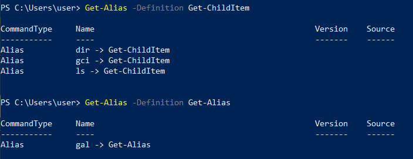

Get-Alias (gal)
To find what the aliases are for a specific cmdlet,
we can use the “Get-Alias” cmdlet with the “-Definition” parameter followed by a cmdlet name
example:
PS> Get-Alias -Definition Get-ChildItem
PS> Get-Alias -Definition Get-Alias
